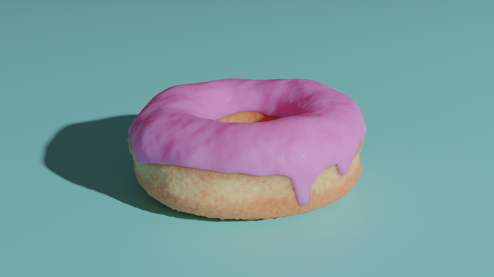
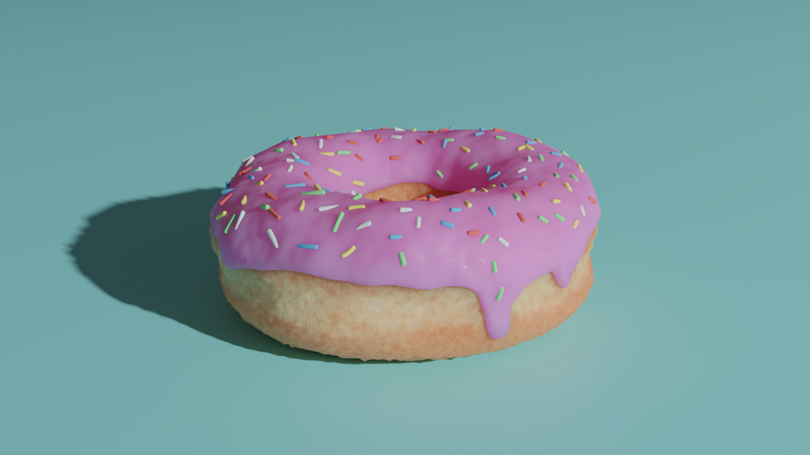
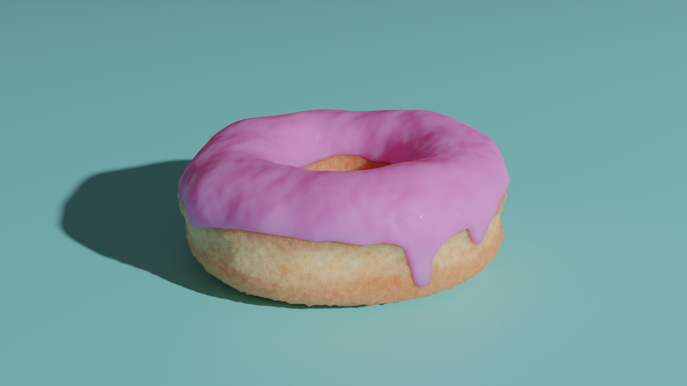
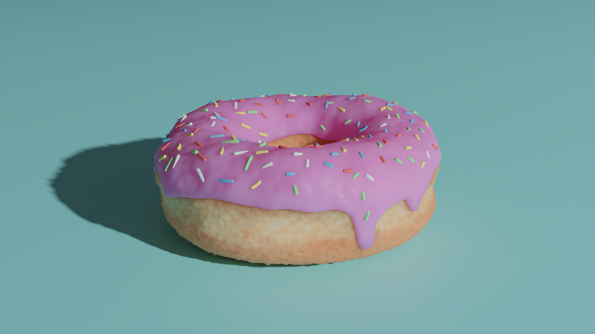

High School Narrative Film
In high school I produced a narrative short film titled "Burnt Out." Its storyline follows the protagonist grappling with outrageous challenges imposed by his boss, roommate, and life itself. This relentless pressure eventually pushes him to a mental breaking point, causing him to go off the deep end. Uncoincidentally, his journey mirrors my own experience of the creative process while making the film.

 


